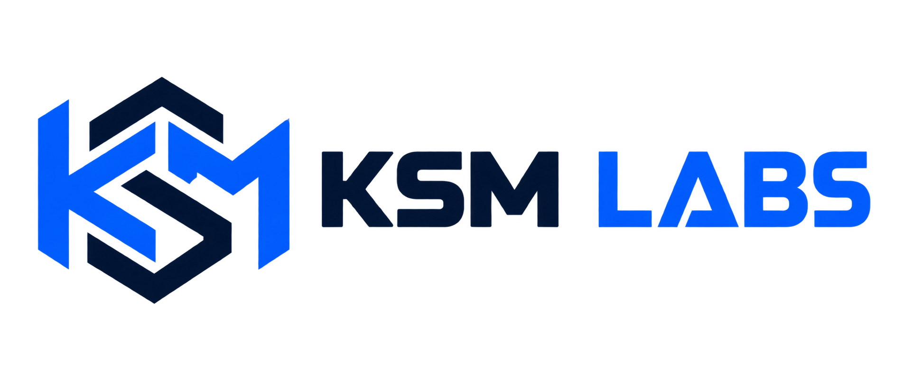

Welcome!

Welcome to KSM Labs! This website was created for my COP4813 Web Systems course.
As I complete assignments in this course, I will be updating this page and cataloging each assingment. Plus adding new features. Stay tuned.
About Me
I am currently pursuing a Bachelor of Science in Information Technology, along with an Advanced Technical Certificate in Cybersecurity and Cyberforensics at Daytona State College. Through my coursework, I am continuing to build skills in programming, networking, databases, and cybersecurity that will help prepare me for a career in the field. Last semester, I studied data structures using JavaScript, and I look forward to applying that experience to this website by adding interactive features and continuing to strengthen my web development skills.
KSM Labs is my personal portfolio. This is where I will showcase my creativity and different technical skills by building upon this website.
Experience & Skills
- Database Management
- Networks & Security
- Linux Administration
- Python | C# | Javascript | HTML | CSS